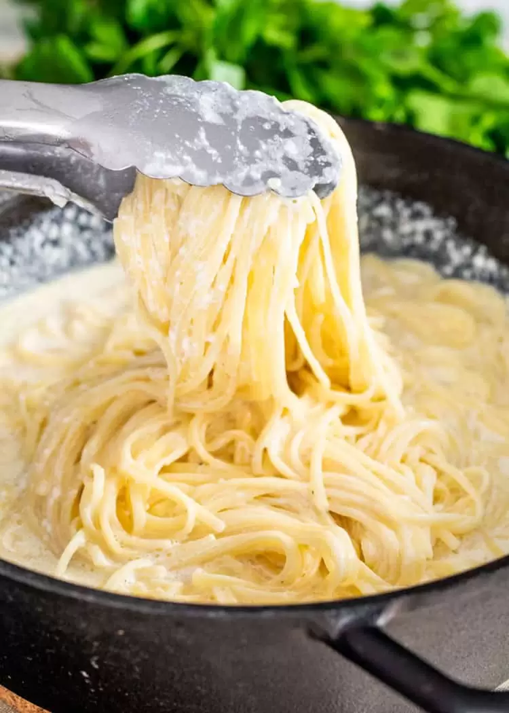

Alfredo pasta Recipe

A quick and simple microwave mug cake recipe.
\
Ingredients
- 8 ounce pasta
- 4 tablespoons butter
- 2 cloves minced garlic
- 1 1/2 cups milk
- 1 cup heavy cream
- 1/2 cup Parmesan Cheese
- 1/4 teaspoon salt
- 1/4 teaspoon pepper
- 2 tablespoons fresh parsley
Steps
- Cook the pasta according to the package instructions.
- Melt the butter in a large skillet over medium high heat. Add the garlic and cook for 30 seconds, or until fragrant.
- Pour in the milk and cream. Stir consistently to avoid burning on the bottom of the pan until the mixture comes to a boil. Turn the heat down to medium, and mix in the parmesan cheese, salt, and pepper. Adjust the seasoning to your own taste.
- Remove the pan from the heat and mix in the cooked pasta until the sauce begins to thicken. Garnish with parsley, and serve.